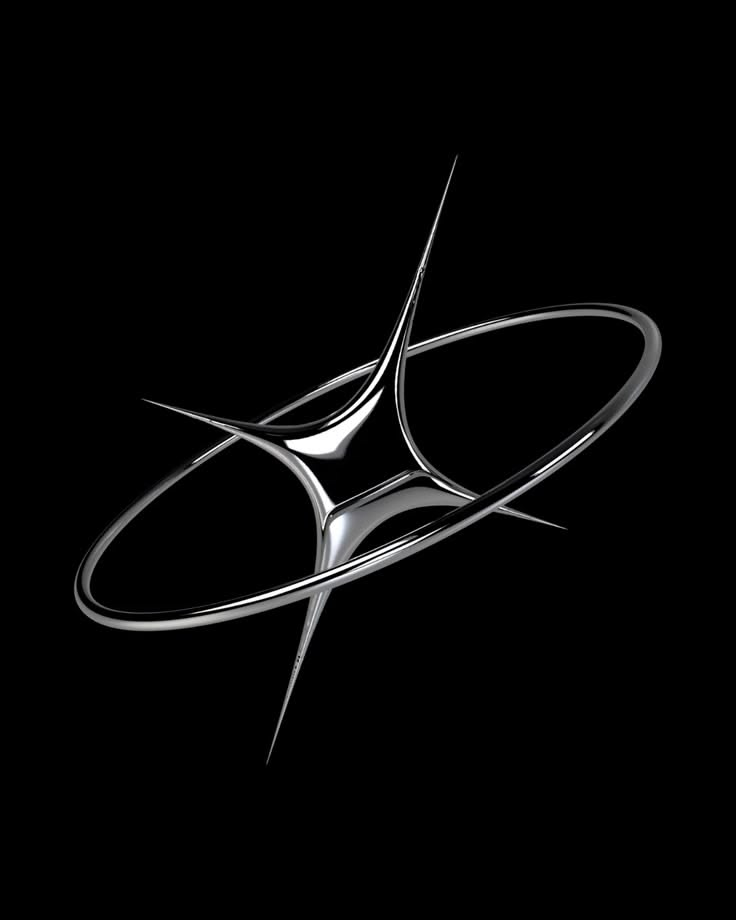
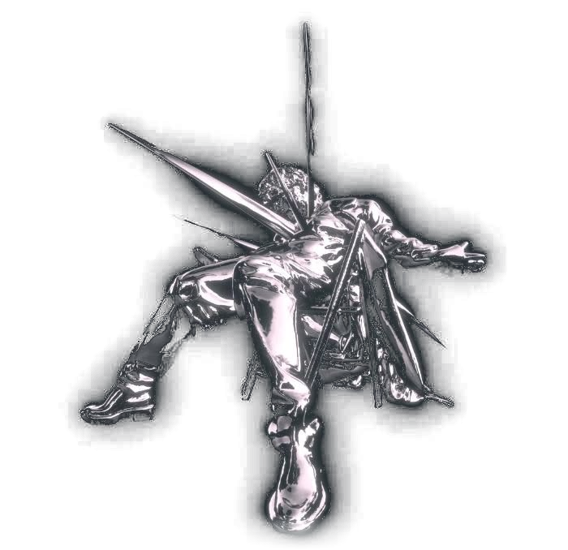
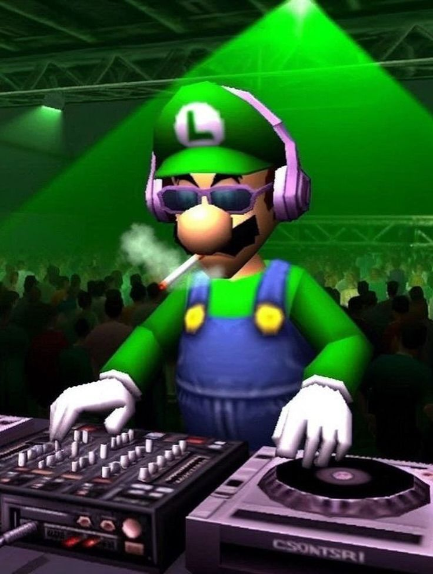
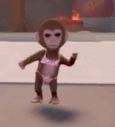

THIS IS
YOUR
UNIVERSE.
NICHT SCROLLEN. ENTDECKEN.
ÖFFNE EIN FENSTER. FINDE DEN FEHLER.

FRITTY-PC / UNSTABLESAME CALL.
SAME FREQUENCY.

Das sind nicht einfach zwei Profilbilder. Das seid ihr beide im Discord-Call. Und manchmal ist genau das schon ein ziemlich guter Ort.
OUR FREQUENCY.
Indie, Groove Techno, Yeat und alles dazwischen. Klick auf einen Artist, um das offizielle Spotify-Profil zu öffnen.
Für Musik im Browser bitte im Spotify-Player Play drücken. Automatisches Abspielen mit Ton ist browserseitig eingeschränkt.
MAIN CHARACTER ENERGY.

 UNLOCKED / LEVEL 24
UNLOCKED / LEVEL 2424 Jahre. Unzählige Songs. Sehr viel Main-Character-Energy.
CHAT IS COOKED.
Der echte Chat lädt nur nach deinem Klick und funktioniert auf GitHub Pages, sofern Twitch die Einbettung zulässt. Er zeigt Nachrichten nur, wenn der Chat aktiv ist.
MRSRONI AUF TWITCH ↗HAPPY
BIRTHDAY.
Hey Roni, alles Gute zum 24. Geburtstag! 🖤
Auf noch mehr gemeinsame Musik, Discord-Calls, spontane Lachflashs, Streams und Momente, bei denen man irgendwann nicht mehr weiß, wie man überhaupt auf das Thema gekommen ist.
Bleib so offen, lustig und einzigartig, wie du bist. Und falls wir uns gerade nicht hören: Du weißt ja, wo du mich findest.
THIS IS NOT A DRILL.


Okay Roni. Jetzt wird nicht mehr diskutiert. Ab auf die Tanzfläche.

ALERT: FRITTY-PC IST NICHT MEHR ZU RETTENHOW TO RONI.
Desktop-Icons öffnen Programme. Fenster kannst du am oberen Rand verschieben, minimieren und schließen. Unten findest du die offenen Programme und den Spotify-Player.
Auf dem Handy werden Fenster bildschirmfüllend angezeigt. Über „BACK TO DESKTOP“ kommst du zurück.
PS: Das RØNI.OS-Logo hat ein Geheimnis. Fünf Klicks reichen.
FRITTY.EXE
HAT DEN PC
ÜBERNOMMEN.
ERROR 024: FRITTY HAT ADMINRECHTE. RONI, LAUF.
HAPPY BIRTHDAY, YOU ABSOLUTE LEGEND. 🪩